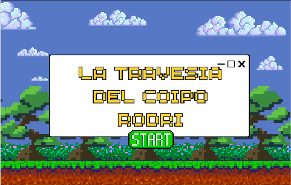

El juego que podría salvar a las especies de la eco-región del Delta ya está disponible en las plataformas
Alumnxs del Colegio Nacional de Buenos Aires desarrollaron un juego sobre la fauna y la flora de la eco- región del Delta y el Paraná con el fin de concientizar la importancia de la preservación de las especies.
Luego de la visita a la Reserva Ecológica de Costanera Sur (Av. Dr. Tristán Achával Rodríguez 1550, C1768 Cdad. Autónoma de Buenos Aires) lxs alumnxs del Colegio Nacional de Buenos Aires decidieron inventar un juego para todas las edades con el fin de enseñarle a la comunidad ubicada en la eco-región del Delta y el Paraná la importancia de la conservación de las especies y el impacto que conllevaría si no lo hacemos.
¿Qué es la Reserva Ecológica de Costanera Sur?
La reserva ecológica reúne la mayor cantidad de biodiversidad dentro de la Ciudad de Buenos Aires y se extiende a lo largo de 350 hectáreas. Conformado por distintos ambientes, la reserva posee una variedad inigualable de fauna y flora característica de cada zona. Entre los diferentes ambientes se encuentran: Lagunas y bañados, humedales, el cortaderal, bosque de alisos de río y sauces criollos, juncal y matorral ribereño.

¿De qué trata el juego?
El protagonista de este juego se llama “Rodri” el Coipo, quien se perdió durante la noche buscando comida y hay que ayudarlo a regresar a su hábitat natural (represas, lagunas, cuerpos de agua, etc) para reencontrarse con su familia. Para ayudarlo a volver, debe seguir un sendero de piedras, las cuales cada una son un nivel y se harán en cada nivel cinco (5) preguntas. ¡Pero cuidado! Cada nivel es más difícil que el anterior, por lo que la complejidad en las preguntas será cada vez mayor.
Si bien este juego parece muy prometedor, la realidad es que debido a la falta de financiamiento no se pudo terminar, por lo que esta aplicación es un prototipo para un posible futuro proyecto (es por esto que el juego solo llega hasta el nivel dos). Aunque lxs alumnxs del CNBA se las están ingeniando para poder terminarlo, solo podrán continuar con el juego aquellas personas que tenga la versión Premium, la cual hay que pagar. ¿Estás listx para ayudar a Rodri a volver a su hogar? ¿Serás capaz de responder todas las preguntas? ¡Entrá al siguiente link y que empiece la diversión!